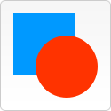
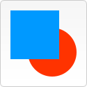
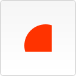
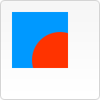
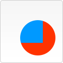
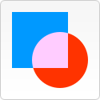
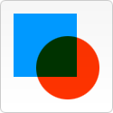
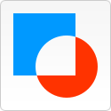

canvas 是一个可以使用脚本(通常为JavaScript)在其中绘制图形的 HTML 元素.它可以用于制作照片集或者动画
HTML中的元素canvas只支持一种原生的图形绘制：矩形。所有其他的图形的绘制都至少需要生成一条路径。不过，我们拥有众多路径生成的方法让复杂图形的绘制成为了可能。
绘制并填充矩形, 从画布的x,y坐标开始, 绘制一个宽width, 高height的矩形
ctx.beginPath(); 开始绘制路径
ctx.moveTo(x,y); 笔触移动到画布x,y的位置
ctx.lineTo(x,y);
ctx.lineTo(x2,y2); 绘制到新位置x2,y2
....
ctx.closePath(); 封闭路径(也可以不封闭)
ctx.strokeStyle = "rgba(255,0,0,0.4)" 设置描边的画笔颜色
ctx.fillStyle = "yellow" 设置填充的颜色
ctx.stroke() 描边路径
ctx.fill() 填充路径
ctx.arc(x,y,radius,startAngle,endAngle,anticlockwise)
画一段弧线, 圆心(x,y),半径为radius,起始弧度到结束弧度,逆时针还是顺时针画(默认是false顺时针)
ctx.arc(200,80,40,0,6.3,false); ctx.fill();
绘制一段封闭的圆弧, 并填充;
ctx.strokeStyle = "rgba(255,0,255,0,7)" 设置线的颜色(可以设置透明度)
ctx.lineWidth = "30" 设置线的宽度(不需要单位)
更多的属性可以查看手册 火狐MDN手册
绘制文本有两种方式
图片可以从构造函数Image()生成, 或者获取页面内的节点来获取图片(也可以截取video标签的视频中的某一帧来获得图片,详细参考手册)
通过构造函数创建图片并绘制的方法如下:
drawImage()方法的参数
ctx.drawimage(img,x,y)img是图片对象, x,y是画布canvas中的起始坐标
ctx.drawImage(img,x,y,width,height)width,height是图片画入时图片的宽高,可以用来控制图片的缩放
ctx.drawImage(img,sx,sy,swidth,sheight,dx,dy,dwidth,dheight) 切片方法画入图片, 参数分别是图片对象, 源图片的起始坐标sx,sy和宽高. 画布中的坐标dx,dy和宽高

canvas动画原理:
画一帧 → 全部擦除 → 重绘 → 全部擦除 → 重绘 → ……
不运动的部分也要跟着重绘
不管动画中有多少对象在运动，页面上一共只能有一个setInterval()。 也就是说，一个setInterval要负责所有的小球的移动，而不是每个小球自己持有自己的定时器。这和之前DOM做游戏不一样。
上面效果的源码
之前的做法是把一个图形绘制在另一个之上, 除此之外, 利用 globalCompositionOperation 方法可以实现图形的组合与合成
组合模式一共有12种
注意：下面所有例子中，蓝色方块是先绘制的，即“已有的 canvas 内容”，红色圆形是后面绘制，即“新图形”。
|
source-over (default) 这是默认设置，新图形会覆盖在原有内容之上。 |
 |
destination-over 会在原有内容之下绘制新图形。 |
 |
|
source-in 新图形会仅仅出现与原有内容重叠的部分。其它区域都变成透明的。 |
 |
destination-in 原有内容中与新图形重叠的部分会被保留，其它区域都变成透明的。 |
|
|
source-out 结果是只有新图形中与原有内容不重叠的部分会被绘制出来。 |
destination-out 原有内容中与新图形不重叠的部分会被保留。 |
||
|
source-atop 新图形中与原有内容重叠的部分会被绘制，并覆盖于原有内容之上。 |
 |
destination-atop 原有内容中与新内容重叠的部分会被保留，并会在原有内容之下绘制新图形 |
 |
|
lighter 两图形中重叠部分作加色处理。 |
 |
darker 两图形中重叠的部分作减色处理。 |
 |
|
xor 重叠的部分会变成透明。 |
 |
copy 只有新图形会被保留，其它都被清除掉。 |
save 和 restore 方法是用来保存和恢复 canvas 状态的，都没有参数。Canvas 的画笔,笔触等的状态就是当前画面应用的所有样式和变形的一个快照。
Canvas 状态是以堆（stack）的方式保存的，每一次调用 save 方法，当前的状态就会被推入堆中保存起来。
这种状态包括：
当前应用的变形（即移动，旋转和缩放，见下）
strokeStyle, fillStyle, globalAlpha, lineWidth, lineCap, lineJoin, miterLimit, shadowOffsetX, shadowOffsetY, shadowBlur, shadowColor, globalCompositeOperation 的值
当前的裁切路径（clipping path)
你可以调用任意多次 save 方法。
每一次调用 restore 方法，上一个保存的状态就从堆中弹出，所有设定都设定为这次保存的状态。
ctx.translate(x,y) 移动canvas的坐标原点到x,y的位置. 一般通过移动坐标原来来为需要旋转的图形设置旋转参考点.
为了方便的移动坐标原点并在操作完之后恢复, 可以在用save(), 和 restore() 属性来更方便的恢复到原来的状态
ctx.rotate(angle) 设置旋转的角度, 旋转的中心是canvas的左边原点.
旋转是画布的整个坐标系都会旋转.
输入坐标系旋转的角度.
输入坐标圆点移动的x值.
输入坐标圆点移动的y值.
ctx.scale(x,y) 对形状位图进行缩放.
传入2个参数, x,y 分别是横轴和纵轴的缩放倍数. 如0.5表示缩小为原来的0.5倍. 2.0表示放大为原来的2倍
该属性可以直接对变形矩阵修改
ctx.transform(a,b,c,d,e,f)
a 水平缩放
b 水平倾斜
c 垂直倾斜
d 垂直缩放
e 水平移动
f 垂直移动